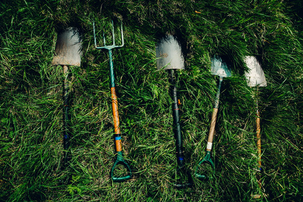
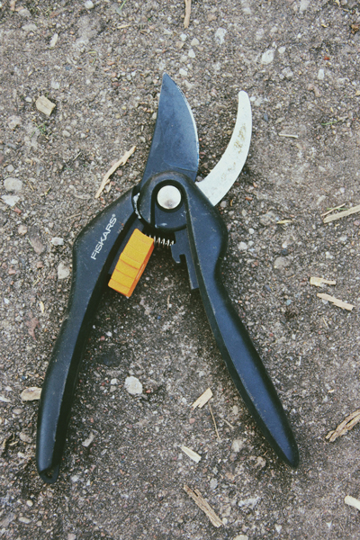
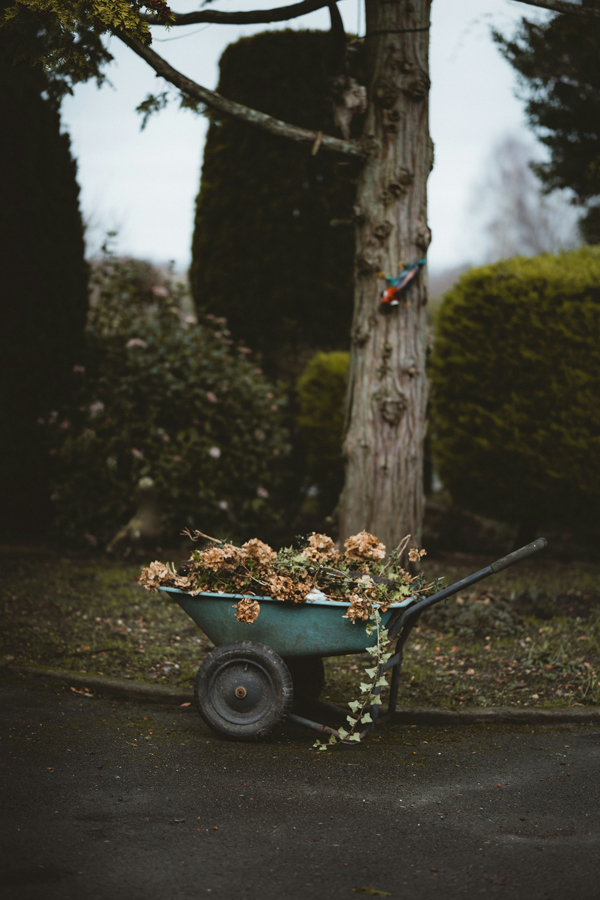

10 Essential Tools Every Gardener Should Have
Having the right tools can make all the difference in your gardening experience. Whether you're a seasoned pro or just starting out, here are ten essential tools every gardener should have in their arsenal:
1: Hand Trowel:
Perfect for digging small holes for planting seedlings or bulbs, a hand trowel is a versatile tool that every gardener should have.
2: Pruning Shears:
Keep your plants healthy and tidy with a good pair of pruning shears. Use them to trim back dead or overgrown branches, shape bushes, and remove spent flowers.
3: Garden Gloves:
Protect your hands from thorns, prickly plants, and blisters with a sturdy pair of garden gloves. Look for gloves that are durable, breathable, and water-resistant for maximum comfort and protection.

4: Hori Hori Knife:
This Japanese gardening knife is a multipurpose tool that can be used for digging, weeding, planting, and cutting through tough roots and soil. Its sharp, serrated edge makes quick work of any gardening task.
5: Garden Rake:
Use a garden rake to level soil, remove debris, and spread mulch or compost. Choose a rake with sturdy tines and a comfortable handle for easy use.
6: Watering Can or Hose:
Proper watering is essential for the health of your plants. Invest in a quality watering can or hose to ensure your garden gets the moisture it needs, whether you're watering delicate seedlings or established plants.
7: Wheelbarrow or Garden Cart:
Save your back from unnecessary strain by using a wheelbarrow or garden cart to transport heavy loads of soil, mulch, plants, or garden waste around your yard.
8: Garden Fork:
Break up compacted soil, aerate the ground, and turn compost with a sturdy garden fork. Look for one with sharp, durable tines that can penetrate tough soil with ease.
9: Pruning Saw:
For larger branches that are too thick for pruning shears, a pruning saw is essential. Choose a saw with a sharp blade and comfortable handle for safe and efficient cutting.
10: Soil Knife:
Also known as a soil scoop or weeding knife, this handy tool is perfect for digging, planting, weeding, and dividing plants. Its serrated edge makes it easy to cut through roots and tough soil, while its pointed tip allows for precision work in tight spaces.